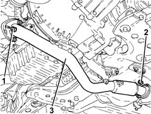
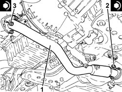
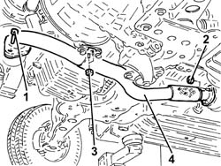
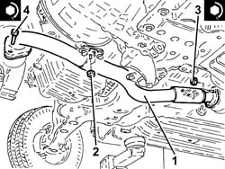

1076B70 exhaust pipe between pre-catalytic converter and catalytic converter - r r
- Path
- Procedures > 10 ENGINE > 1076 EXHAUST PIPES AND SILENCERS > 1076B exhaust pipes and silencers > 1076B70 exhaust pipe between pre-catalytic converter and catalytic converter - r r
- Kind
- repair procedure (removal / refitting; the operation number is the code)
- Applies to
- engines: 1.9 JTD 16v, 2.4 JTD 20v; all production periods
- Interactive page
- https://sloeber94.github.io/elrnDB-a156/en/#/3237866
Applies to: engines: 1.9 JTD 16v; all production periods
 Removing
Removing
 Refitting
RefittingPosition the vehicle on the ramp.
Proceed with removal 7055B54 under-engine guard - r r .
1. Undo the nuts fixing the exhaust pipe between the precatalyzer and the catalyzer to the catalytic preconverter.
2. Undo the nuts fixing the exhaust pipe between the precatalyzer and the catalyzer to the catalytic converter.
3. Remove the exhaust pipe between the precatalyzer and the catalytic converter, complete with gaskets.

Applies to: engines: 1.9 JTD 16v; all production periods
Refitting
Removing1. Place the exhaust pipe between the precatalyzer and the catalyzer complete with gaskets back in its housing.
2. Tighten the nuts fixing the exhaust pipe between the precatalyzer and the catalyzer to the catalytic converter to the recommended torque.
 | Fastening | Component | Ø | Value (daNm) |
|---|---|---|---|---|
2 | Nut | PRE-CAT CONVERTOR/CAT CONVERTOR PIPE | M8 | (Catalytic converter side) 2.3 ÷ 2.8 |
3. Tighten the nuts fixing the exhaust pipe between the precatalyzer and the catalyzer to the catalytic preconverter to the recommended torque.
| Fastening | Component | Ø | Value (daNm) |
|---|---|---|---|---|
3 | Nut | PRE-CAT CONVERTOR/CAT CONVERTOR PIPE | M8 | (Catalyitic preconverter side) 2.3 ÷ 2.8 |

Applies to: engines: 1.9 JTD 16v; all production periods
Proceed with refitting 7055B54 under-engine guard - r r .
Remove the car from the ramps.
Applies to: engines: 2.4 JTD 20v; all production periods
Removing
RefittingPosition the vehicle on the ramp.
Proceed with removal 7055B54 under-engine guard - r r .
1. Undo the bolts fixing the exhaust pipe between the precatalyzer and the catalyzer, catalytic preconverter side.
2. Undo the nuts fixing the exhaust pipe between the precatalyzer and the catalyzer, catalytic converter side.
3. Undo the nuts securing the exhaust pipe mounting collar between precatalyzer and catalytic converter.
4. Remove the exhaust pipe between the precatalyzer and the catalytic converter, complete with gaskets.

Applies to: engines: 2.4 JTD 20v; all production periods
Refitting
Removing1. Place the exhaust pipe between the precatalyzer and the catalytic converter complete with gaskets back in its housing.
2. Undo the nuts securing the exhaust pipe mounting collar between precatalyzer and catalytic converter.
3. Tighten the nuts fixing the exhaust pipe between the precatalyzer and the catalyzer to the catalytic converter to the recommended torque.
| Fastening | Component | Ø | Value (daNm) |
|---|---|---|---|---|
3 | Nut | PRE-CAT CONVERTOR/CAT CONVERTOR PIPE | M8 | (Catalytic converter side) 2.3 ÷ 2.8 |
4. Tighten the nuts fixing the exhaust pipe between the precatalyzer and the catalyzer to the catalytic preconverter to the recommended torque.
| Fastening | Component | Ø | Value (daNm) |
|---|---|---|---|---|
4 | Bolt | PRE-CAT CONVERTOR/CAT CONVERTOR PIPE | M8 | (Catalyitic preconverter side) 2.3 ÷ 2.8 |

Applies to: engines: 2.4 JTD 20v; all production periods
Proceed with refitting 7055B54 under-engine guard - r r .
Remove the car from the ramps.
Topics linked from this page (1)
Topics that link to this page (29)
- 1004B10 power unit with manual gearbox - r + r
- 1008A44 rear rigid mount - r r
- 1008B20 power unit intermediate mount flexible block - replace
- 1016C10 cylinder head - r + r and replace gasket
- 1020A20 crank case oil sump - r + r clean seals for sealant application
- 1020D11 front crankshaft oil seal cover-r r and replace seal with timing belt removed-includes cleaning mating surfaces and applying sealant
- 1020D26 flywheel side oil seal cover - r+r
- 1024B10 engine flywheel - r + r for versions with manual gearbox
- 1028H10 connecting rod and piston set - r r
- 1060G90 diesel injection wiring harness - r r
- 1064A24 variable geometry turbocharger exhaust manifold assembly sleeveleading to exhaust pipe r r
- 1072C10 exhaust manifold - r + r and replace seal
- 1080B40 catalytic pre-converter - r r
- 1084B34 cartridge engine oil filter support - r + r
- 1084C37 Engine oil supply PIPE to cooling radiator -R.R.
- 1084C38 engine oil delivery and return pipes to cooling radiator - r + r
- 1084C39 Engine oil return PIPE from cooling radiator - R.R.
- 1810A20 clutch - r + r
- 1820A24 thrust bearing linkage - r + r
- 2110A10 manual gearbox and differential - r + r
- 2110C22 gear input shaft seals - r r
- 2110D63 rh differential shaft oil seal - r r
- 2125C30 gear engagement cable - r r
- 2125C70 gearbox/brake lever mount - r r
- 4130B32 power steering pump mount - r r
- 4130B72 Return PIPE from POWER ASSISTED STEERING BOX to INTERMEDIATE PIPE - R.R.
- 4130B74 return pipe between power steering case and duplex pipes r r
- 5520B10 starter motor - r+r
- 5530A10 alternator - r+r